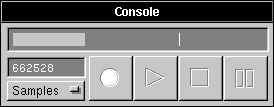

The Console

The Console provides recording and playback functions for sounds. The Console is displayed through the Console option in the Tools Menu: 
The four large buttons are, from left to right:
 Record, which begins recording a sound from machine's internal microphone. A sound may be recorded for up to 10 minutes.
Record, which begins recording a sound from machine's internal microphone. A sound may be recorded for up to 10 minutes.
 Play, which begins playing a sound through your machine's speaker.
Play, which begins playing a sound through your machine's speaker.
 Stop, which stops the playing and recording of sound. Stopping sound recording will display the sound as a new document.
Stop, which stops the playing and recording of sound. Stopping sound recording will display the sound as a new document.
 Pause, which pauses the playback (but not recording) of a sound.
Pause, which pauses the playback (but not recording) of a sound.
Also on the Console is a Stereo Sound Meter, on the top, which shows the playing/recording amplitude of the sound, along with a peak bubble for the recent peak amplitude of the played/recorded sound.
Lastly, the Console sports a Sound Tracker, at left, which displays the number of Samples, Seconds, or the Percent of the sound played. When recording a sound, there is no Percent value, of course.
The number of samples, seconds, or percent played are reflective of the sound's processing, not of the sound itself. This means, for example, that the amount shown in the picture above means 66528 samples have been played so far, not that sample number 66528 in the sound is being played. If only a selection of the sound is played, the sample count still starts at 0 and maxes out at the size of the selection.